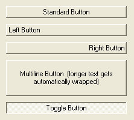

ButtonGadget()
语法
Result = ButtonGadget(#Gadget, x, y, Width, Height, Text$ [, Flags])概要
Create a button gadget in the current GadgetList.
参数
#Gadget A number to identify the new gadget. #PB_Any can be used to auto-generate this number. x, y, Width, Height The position and dimensions of the new gadget. Note: on OS X, using an height of 25 will enable the fixed height button type, which is commonly used in OS X applications. It will also make the #PB_Button_Default flags available. Text$ The text to display on the button. Flags (optional) A combination (using the bitwise OR operator '|') of the following constants: #PB_Button_Right : Aligns the button text at the right. (not supported on Mac OSX) #PB_Button_Left : Aligns the button text at the left. (not supported on Mac OSX) #PB_Button_Default : Makes the button look as if it is the default button in the window (on OS X, the height of the button needs to be 25). #PB_Button_MultiLine : If the text is too long, it will be displayed on several lines. (not supported on Mac OSX) #PB_Button_Toggle : Creates a toggle button: one click pushes it, another will release it.
返回值
Returns nonzero on success and zero on failure. If #PB_Any was used as the #Gadget parameter then the return-value is the auto-generated gadget number on success.
备注
A 'mini help' can be added to this gadget using GadgetToolTip().
The following functions can be used to control the gadget:
- SetGadgetText(): Changes the text of the ButtonGadget.
- GetGadgetText(): Returns the text of the ButtonGadget.
- SetGadgetState(): Used with #PB_Button_Toggle buttons to set the actual state (1 = toggled, 0 = normal).
- GetGadgetState(): Used with #PB_Button_Toggle buttons to get the actual state of the button (1 = toggled, 0 = normal).
示例
; Shows possible flags of ButtonGadget in action... If OpenWindow(0, 0, 0, 222, 200, "ButtonGadgets", #PB_Window_SystemMenu | #PB_Window_ScreenCentered) ButtonGadget(0, 10, 10, 200, 20, "Standard Button") ButtonGadget(1, 10, 40, 200, 20, "Left Button", #PB_Button_Left) ButtonGadget(2, 10, 70, 200, 20, "Right Button", #PB_Button_Right) ButtonGadget(3, 10,100, 200, 60, "Multiline Button (longer text gets automatically wrapped)", #PB_Button_MultiLine) ButtonGadget(4, 10,170, 200, 20, "Toggle Button", #PB_Button_Toggle) Repeat : Until WaitWindowEvent() = #PB_Event_CloseWindow EndIf

参阅
SetGadgetText(), GetGadgetText(), SetGadgetState(), GetGadgetState(), ButtonImageGadget()
已支持操作系统
所有